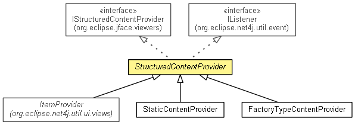

org.eclipse.net4j.util.ui
Class StructuredContentProvider<INPUT>
java.lang.Object
 org.eclipse.net4j.util.ui.StructuredContentProvider<INPUT>
org.eclipse.net4j.util.ui.StructuredContentProvider<INPUT>
- All Implemented Interfaces:
- EventListener, org.eclipse.jface.viewers.IContentProvider, org.eclipse.jface.viewers.IStructuredContentProvider, IListener
- Direct Known Subclasses:
- ItemProvider, StaticContentProvider
- public abstract class StructuredContentProvider<INPUT>
- extends Object
- implements org.eclipse.jface.viewers.IStructuredContentProvider, IListener

| Methods inherited from class java.lang.Object |
clone, equals, finalize, getClass, hashCode, notify, notifyAll, toString, wait, wait, wait |
| Methods inherited from interface org.eclipse.jface.viewers.IStructuredContentProvider |
getElements |
StructuredContentProvider
public StructuredContentProvider()
dispose
public void dispose()
- Specified by:
dispose in interface org.eclipse.jface.viewers.IContentProvider
getInput
public INPUT getInput()
getViewer
public org.eclipse.jface.viewers.StructuredViewer getViewer()
inputChanged
public void inputChanged(org.eclipse.jface.viewers.Viewer viewer,
Object oldInput,
Object newInput)
- Specified by:
inputChanged in interface org.eclipse.jface.viewers.IContentProvider
connectInput
protected void connectInput(INPUT input)
disconnectInput
protected void disconnectInput(INPUT input)
notifyEvent
public void notifyEvent(IEvent event)
- Specified by:
notifyEvent in interface IListener
refreshViewer
public void refreshViewer(boolean updateLabels)
- Since:
- 3.0
refreshElement
public void refreshElement(Object element,
boolean updateLabels)
- Since:
- 3.1
refreshSynced
public void refreshSynced(Object element,
boolean updateLabels)
- Since:
- 3.1
updateLabels
public void updateLabels(Object element)
- Since:
- 3.1
revealElement
public void revealElement(Object element)
- Since:
- 3.1
selectElement
public void selectElement(Object element,
boolean reveal)
- Since:
- 3.1
getDisplay
protected org.eclipse.swt.widgets.Display getDisplay()
getItalicFont
protected org.eclipse.swt.graphics.Font getItalicFont()
- Since:
- 3.1
Copyright (c) 2004 - 2012 Eike Stepper (Berlin, Germany) and others.